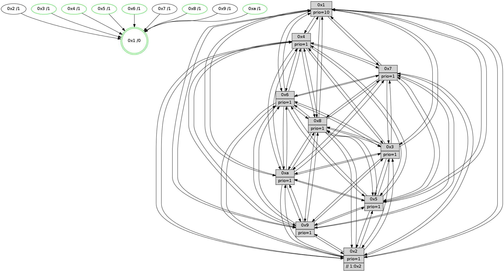

>> << IDX [start] -100 -25 -5 +0 +5 +25 +100 [995.049885035]
 Previous packets
----------------------------------------------------------------------
990.321095 beacon01(faad) #0 coord=01,02,03,04,05,06,07,0a,09,08 cycle=688.0ms assoc
-- color-indic=1 64 d2 77
990.331079 beacon02(faad) #0 coord=01,02,03,04,05,06,07,0a,09,08 cycle=688.0ms assoc 64 41 46
990.341077 beacon03(faad) #0 coord=01,02,03,04,05,06,07,0a,09,08 cycle=688.0ms assoc 64 3b 0b
990.351078 beacon04(faad) #0 coord=01,02,03,04,05,06,07,0a,09,08 cycle=688.0ms assoc 64 4c e1
990.361078 beacon05(faad) #0 coord=01,02,03,04,05,06,07,0a,09,08 cycle=688.0ms assoc 64 36 ac
990.371079 beacon06(faad) #0 coord=01,02,03,04,05,06,07,0a,09,08 cycle=688.0ms assoc 64 b8 7b
990.381079 beacon07(faad) #0 coord=01,02,03,04,05,06,07,0a,09,08 cycle=688.0ms assoc 64 c2 36
990.391082 beacon0a(faad) #0 coord=01,02,03,04,05,06,07,0a,09,08 cycle=688.0ms assoc 64 b3 3d
990.401084 beacon09(faad) #0 coord=01,02,03,04,05,06,07,0a,09,08 cycle=688.0ms assoc 64 3d ea
990.411085 beacon08(faad) #0 coord=01,02,03,04,05,06,07,0a,09,08 cycle=688.0ms assoc 64 47 a7
990.422304 PARSE ERROR************************
Traceback (most recent call last):
File "PacketAnalysis.py", line 167, in showOperaPacket
structPacket = OperaPacketParse.parsePacket(rawPacket)
File "../../pkg-python/HipSens/Core/OperaPacketParse.py", line 461, in parsePacket
return parseHelloMessage(data)
File "../../pkg-python/HipSens/Core/OperaPacketParse.py", line 127, in parseHelloMessage
assert struct.calcsize("H")*len(neighAddrList) == len(linkList)
AssertionError
48 34 01 00 02 1e 00 02 02 12 04 00 02 00 09 00 05 00 0a 00 03 00 08 00 06 00 07 00 53 04 00 84 00 00 4c 12 23 1c c0 3e 60 ca 6a 34 30 2d 31 10 12 44 be 2d c1 f9 4c 51
990.425118 [STC(1) #0.136 tree-change,inconsistent-stability,stable,to-color d=0]
990.426572 [Hello(3): seq=633 sym=1,7,6,2,4,8,9,10,5 sysInfo= stat=1:14,10,12,0/7:1,11,8,8/6:13,6,11,3/2:1,2,13,11/4:8,4,0,7/8:4,0,8,2/9:4,3,12,11/10:0,7,11,3/5:7,12,8,12]
990.429110 [Hello(2): seq=629 sym=4,5,7,6,3,9,8,10,1 sysInfo=hasWarning stat=4:0,9,7,6/5:1,6,9,2/7:2,0,4,9/6:11,11,12,9/3:11,15,10,5/9:13,12,14,5/8:3,8,9,9/10:5,14,15,10/1:10,13,2,1]
990.431639 [Hello(6): seq=633 sym=2,3,5,4,7,9,8,10,1 sysInfo= stat=2:7,0,0,1/3:14,6,1,10/5:14,10,2,13/4:6,11,9,2/7:11,9,15,7/9:12,12,1,5/8:8,10,13,3/10:8,1,6,11/1:4,5,1,1]
990.434354 [Color(8) seq=266 @0:0 prio=1]
990.435856 [Color(6) seq=265 @0:0 prio=1]
990.437191 [Color(4) seq=225 @0:0 prio=1]
990.438916 [Hello(5): seq=633 sym=7,6,4,3,1,9,8,10,2 sysInfo=hasWarning stat=7:10,14,5,10/6:13,5,5,0/4:7,9,2,8/3:12,4,9,10/1:14,15,7,1/9:4,1,1,5/8:4,9,12,10/10:3,8,9,5/2:4,0,0,1]
990.442146 [Color(10) seq=237 @0:0 prio=1]
990.443747 [Color(3) seq=262 @0:0 prio=1]
----------------------------------------------------------------------
991.109226 beacon01(faad) #0 coord=01,02,03,04,05,06,07,0a,09,08 cycle=688.0ms assoc
-- color-indic=1 64 6e 72
991.119208 beacon02(faad) #0 coord=01,02,03,04,05,06,07,0a,09,08 cycle=688.0ms assoc 64 fd 43
991.129209 beacon03(faad) #0 coord=01,02,03,04,05,06,07,0a,09,08 cycle=688.0ms assoc 64 87 0e
991.139209 beacon04(faad) #0 coord=01,02,03,04,05,06,07,0a,09,08 cycle=688.0ms assoc 64 f0 e4
991.149209 beacon05(faad) #0 coord=01,02,03,04,05,06,07,0a,09,08 cycle=688.0ms assoc 64 8a a9
991.159211 beacon06(faad) #0 coord=01,02,03,04,05,06,07,0a,09,08 cycle=688.0ms assoc 64 04 7e
991.169210 beacon07(faad) #0 coord=01,02,03,04,05,06,07,0a,09,08 cycle=688.0ms assoc 64 7e 33
991.179214 beacon0a(faad) #0 coord=01,02,03,04,05,06,07,0a,09,08 cycle=688.0ms assoc 64 0f 38
991.189214 beacon09(faad) #0 coord=01,02,03,04,05,06,07,0a,09,08 cycle=688.0ms assoc 64 81 ef
991.199214 beacon08(faad) #0 coord=01,02,03,04,05,06,07,0a,09,08 cycle=688.0ms assoc 64 fb a2
991.210454 [Hello(10): seq=566 sym=6,2,3,8,7,5,9,4,1 sysInfo=hasWarning stat=6:10,8,2,4/2:12,15,13,5/3:5,3,9,8/8:9,5,5,2/7:1,1,2,2/5:8,0,5,13/9:1,8,3,0/4:9,4,7,7/1:10,3,7,1]
991.213446 [Hello(8): seq=577 sym=5,2,3,4,9,6,7,10,1 sysInfo=hasWarning stat=5:7,4,6,13/2:6,0,14,5/3:9,1,15,12/4:3,2,14,8/9:1,8,4,1/6:9,6,14,11/7:15,14,4,1/10:14,11,7,1/1:15,6,0,0]
991.215875 [Color(5) seq=268 @0:0 prio=1]
991.217442 [Color(1) seq=314 @0:0 prio=10]
991.221640 [STC(6)->1 #0.136 tree-change,inconsistent-stability,stable,to-color d=1]
991.223185 [Hello(9): seq=577 sym=2,5,3,4,7,6,8,10,1 sysInfo=hasWarning stat=2:6,7,0,3/5:13,6,14,4/3:6,9,14,12/4:2,7,11,7/7:2,9,15,9/6:7,4,6,9/8:14,0,1,3/10:6,9,3,1/1:2,4,3,1]
991.226096 [STC(3)->1 #0.136 tree-change,inconsistent-stability,stable,to-color d=1]
991.227472 [Hello(4): seq=633 sym=5,7,6,2,3,9,8,10,1 sysInfo= stat=5:3,5,15,12/7:6,4,0,8/6:13,9,12,10/2:3,5,10,10/3:9,9,12,8/9:3,9,4,8/8:13,11,4,3/10:3,2,7,10/1:15,6,4,1]
991.231622 [Hello(7): seq=633 sym=2,3,5,6,4,8,9,10,1 sysInfo=hasWarning stat=2:4,0,9,13/3:2,12,3,12/5:5,0,7,0/6:1,11,3,7/4:11,7,1,1/8:3,13,2,1/9:0,4,3,0/10:0,1,9,2/1:6,13,3,0]
991.235083 [STC(7)->1 #0.136 tree-change,inconsistent-stability,to-color d=1]
991.236344 [STC(9)->1 #0.136 to-color d=1]
----------------------------------------------------------------------
991.897358 beacon01(faad) #0 coord=01,02,03,04,05,06,07,0a,09,08 cycle=688.0ms assoc
-- color-indic=1 64 5a 6a
991.907341 beacon02(faad) #0 coord=01,02,03,04,05,06,07,0a,09,08 cycle=688.0ms assoc 64 c9 5b
991.917340 beacon03(faad) #0 coord=01,02,03,04,05,06,07,0a,09,08 cycle=688.0ms assoc 64 b3 16
991.927340 beacon04(faad) #0 coord=01,02,03,04,05,06,07,0a,09,08 cycle=688.0ms assoc 64 c4 fc
991.937341 beacon05(faad) #0 coord=01,02,03,04,05,06,07,0a,09,08 cycle=688.0ms assoc 64 be b1
991.947340 beacon06(faad) #0 coord=01,02,03,04,05,06,07,0a,09,08 cycle=688.0ms assoc 64 30 66
991.957341 beacon07(faad) #0 coord=01,02,03,04,05,06,07,0a,09,08 cycle=688.0ms assoc 64 4a 2b
991.967346 beacon0a(faad) #0 coord=01,02,03,04,05,06,07,0a,09,08 cycle=688.0ms assoc 64 3b 20
991.977346 beacon09(faad) #0 coord=01,02,03,04,05,06,07,0a,09,08 cycle=688.0ms assoc 64 b5 f7
991.987346 beacon08(faad) #0 coord=01,02,03,04,05,06,07,0a,09,08 cycle=688.0ms assoc 64 cf ba
991.998611 [Hello(1): seq=543 sym=4,2,9,5,10,3,8,6,7 sysInfo=coloring-mode-on,ColoringModeRequestCalled stat=4:13,2,3,2/2:15,3,0,12/9:11,12,1,6/5:5,3,10,6/10:14,3,0,3/3:1,2,2,3/8:5,5,2,1/6:14,3,15,11/7:10,15,2,12]
992.006164 [Color(10) seq=238 @0:0 prio=1]
992.008867 [Hello(3): seq=634 sym=1,7,6,2,4,8,9,10,5 sysInfo= stat=1:15,10,13,0/7:2,11,9,8/6:13,6,11,3/2:1,2,13,11/4:9,4,0,7/8:4,0,8,2/9:4,3,13,11/10:0,7,11,3/5:7,12,8,12]
992.011561 [Hello(6): seq=634 sym=2,3,5,4,7,9,8,10,1 sysInfo= stat=2:7,0,0,1/3:14,7,2,10/5:15,10,2,13/4:7,12,9,2/7:12,9,0,7/9:13,12,2,5/8:8,10,13,3/10:8,2,6,11/1:5,5,2,1]
992.014387 [Color(3) seq=263 @0:0 prio=1]
----------------------------------------------------------------------
992.685489 beacon01(faad) #0 coord=01,02,03,04,05,06,07,0a,09,08 cycle=688.0ms assoc
-- color-indic=1 64 e6 6f
992.695470 beacon02(faad) #0 coord=01,02,03,04,05,06,07,0a,09,08 cycle=688.0ms assoc 64 75 5e
992.705471 beacon03(faad) #0 coord=01,02,03,04,05,06,07,0a,09,08 cycle=688.0ms assoc 64 0f 13
992.715470 beacon04(faad) #0 coord=01,02,03,04,05,06,07,0a,09,08 cycle=688.0ms assoc 64 78 f9
992.725473 beacon05(faad) #0 coord=01,02,03,04,05,06,07,0a,09,08 cycle=688.0ms assoc 64 02 b4
992.735471 beacon06(faad) #0 coord=01,02,03,04,05,06,07,0a,09,08 cycle=688.0ms assoc 64 8c 63
992.745472 beacon07(faad) #0 coord=01,02,03,04,05,06,07,0a,09,08 cycle=688.0ms assoc 64 f6 2e
992.755478 beacon0a(faad) #0 coord=01,02,03,04,05,06,07,0a,09,08 cycle=688.0ms assoc 64 87 25
992.765476 beacon09(faad) #0 coord=01,02,03,04,05,06,07,0a,09,08 cycle=688.0ms assoc 64 09 f2
992.775477 beacon08(faad) #0 coord=01,02,03,04,05,06,07,0a,09,08 cycle=688.0ms assoc 64 73 bf
992.786696 [Hello(4): seq=634 sym=5,7,6,2,3,9,8,10,1 sysInfo= stat=5:3,5,15,12/7:7,4,1,8/6:14,10,12,10/2:3,5,10,10/3:10,9,12,8/9:3,9,5,8/8:13,11,4,3/10:3,3,7,10/1:0,6,4,1]
992.790021 [Hello(10): seq=567 sym=6,2,3,8,7,5,9,4,1 sysInfo=hasWarning stat=6:11,9,3,4/2:13,15,13,5/3:6,3,10,8/8:10,5,5,2/7:2,1,3,2/5:8,0,5,13/9:2,8,4,0/4:10,4,7,7/1:11,4,7,1]
992.793301 [Hello(9): seq=578 sym=2,5,3,4,7,6,8,10,1 sysInfo=hasWarning stat=2:6,7,0,3/5:13,6,14,4/3:7,10,14,12/4:2,8,11,7/7:2,9,15,9/6:8,4,6,9/8:14,0,1,3/10:6,10,3,1/1:3,4,3,1]
992.795788 [Color(1) seq=315 @0:0 prio=10]
992.798759 [Hello(8): seq=578 sym=5,2,3,4,9,6,7,10,1 sysInfo=hasWarning stat=5:7,5,6,13/2:6,0,14,5/3:10,1,0,12/4:4,2,14,8/9:2,8,5,1/6:10,7,15,11/7:0,14,5,1/10:14,12,7,1/1:0,7,0,0]
992.802197 [Color(5) seq=269 @0:0 prio=1]
992.803974 [Hello(7): seq=634 sym=2,3,5,6,4,8,9,10,1 sysInfo=hasWarning stat=2:5,0,9,13/3:3,12,3,12/5:5,0,7,0/6:2,12,3,7/4:11,7,1,1/8:3,14,2,1/9:0,4,4,0/10:0,2,9,2/1:7,13,3,0]
----------------------------------------------------------------------
993.473622 beacon01(faad) #0 coord=01,02,03,04,05,06,07,0a,09,08 cycle=688.0ms assoc
-- color-indic=1 64 22 61
993.483605 beacon02(faad) #0 coord=01,02,03,04,05,06,07,0a,09,08 cycle=688.0ms assoc 64 b1 50
993.493603 beacon03(faad) #0 coord=01,02,03,04,05,06,07,0a,09,08 cycle=688.0ms assoc 64 cb 1d
993.503603 beacon04(faad) #0 coord=01,02,03,04,05,06,07,0a,09,08 cycle=688.0ms assoc 64 bc f7
993.513605 beacon05(faad) #0 coord=01,02,03,04,05,06,07,0a,09,08 cycle=688.0ms assoc 64 c6 ba
993.523604 beacon06(faad) #0 coord=01,02,03,04,05,06,07,0a,09,08 cycle=688.0ms assoc 64 48 6d
993.533606 beacon07(faad) #0 coord=01,02,03,04,05,06,07,0a,09,08 cycle=688.0ms assoc 64 32 20
993.543611 beacon0a(faad) #0 coord=01,02,03,04,05,06,07,0a,09,08 cycle=688.0ms assoc 64 43 2b
993.553610 beacon09(faad) #0 coord=01,02,03,04,05,06,07,0a,09,08 cycle=688.0ms assoc 64 cd fc
993.563610 beacon08(faad) #0 coord=01,02,03,04,05,06,07,0a,09,08 cycle=688.0ms assoc 64 b7 b1
993.574857 [Hello(1): seq=544 sym=4,2,9,5,10,3,8,6,7 sysInfo=coloring-mode-on,ColoringModeRequestCalled stat=4:14,3,3,2/2:0,3,0,12/9:11,12,1,6/5:5,4,10,6/10:14,4,0,3/3:2,3,2,3/8:6,5,2,1/6:15,3,15,11/7:11,15,2,12]
993.578611 [Color(4) seq=227 @0:0 prio=1]
993.579870 [Color(10) seq=239 @0:0 prio=1]
993.581806 [Hello(5): seq=635 sym=7,6,4,3,1,9,8,10,2 sysInfo=hasWarning stat=7:12,14,6,10/6:14,6,6,0/4:9,10,2,8/3:13,5,10,10/1:14,0,7,1/9:5,1,2,5/8:4,9,12,10/10:4,10,9,5/2:4,0,0,1]
993.584400 [Hello(3): seq=635 sym=1,7,6,2,4,8,9,10,5 sysInfo= stat=1:0,11,13,0/7:3,11,9,8/6:13,6,11,3/2:2,2,13,11/4:10,4,0,7/8:5,0,8,2/9:5,3,13,11/10:1,7,11,3/5:7,13,8,12]
993.587852 [Color(3) seq=264 @0:0 prio=1]
993.589257 [Hello(2): seq=631 sym=4,5,7,6,3,9,8,10,1 sysInfo=hasWarning stat=4:2,11,7,6/5:2,7,9,2/7:4,0,5,9/6:13,12,13,9/3:12,0,11,5/9:15,12,15,5/8:5,9,9,9/10:7,0,15,10/1:10,15,2,1]
993.592186 [Hello(6): seq=635 sym=2,3,5,4,7,9,8,10,1 sysInfo= stat=2:8,0,0,1/3:14,7,2,10/5:15,11,2,13/4:8,12,9,2/7:13,9,0,7/9:14,12,2,5/8:9,10,13,3/10:9,2,6,11/1:6,6,2,1]
993.595191 [Color(8) seq=268 @0:0 prio=1]
993.597251 [Color(6) seq=267 @0:0 prio=1]
----------------------------------------------------------------------
994.261754 beacon01(faad) #0 coord=01,02,03,04,05,06,07,0a,09,08 cycle=688.0ms assoc
-- color-indic=1 64 9e 64
994.271737 beacon02(faad) #0 coord=01,02,03,04,05,06,07,0a,09,08 cycle=688.0ms assoc 64 0d 55
994.281737 beacon03(faad) #0 coord=01,02,03,04,05,06,07,0a,09,08 cycle=688.0ms assoc 64 77 18
994.291736 beacon04(faad) #0 coord=01,02,03,04,05,06,07,0a,09,08 cycle=688.0ms assoc 64 00 f2
994.301739 beacon05(faad) #0 coord=01,02,03,04,05,06,07,0a,09,08 cycle=688.0ms assoc 64 7a bf
994.311736 beacon06(faad) #0 coord=01,02,03,04,05,06,07,0a,09,08 cycle=688.0ms assoc 64 f4 68
994.321738 beacon07(faad) #0 coord=01,02,03,04,05,06,07,0a,09,08 cycle=688.0ms assoc 64 8e 25
994.331742 beacon0a(faad) #0 coord=01,02,03,04,05,06,07,0a,09,08 cycle=688.0ms assoc 64 ff 2e
994.341742 beacon09(faad) #0 coord=01,02,03,04,05,06,07,0a,09,08 cycle=688.0ms assoc 64 71 f9
994.351743 beacon08(faad) #0 coord=01,02,03,04,05,06,07,0a,09,08 cycle=688.0ms assoc 64 0b b4
994.363237 [Hello(7): seq=635 sym=2,3,5,6,4,8,9,10,1 sysInfo=hasWarning stat=2:6,0,9,13/3:4,13,3,12/5:6,0,7,0/6:3,13,3,7/4:11,8,1,1/8:3,15,2,1/9:0,4,4,0/10:0,3,9,2/1:8,13,3,0]
994.365873 [Hello(9): seq=579 sym=2,5,3,4,7,6,8,10,1 sysInfo=hasWarning stat=2:7,7,0,3/5:14,7,14,4/3:8,11,14,12/4:2,9,11,7/7:3,9,15,9/6:9,5,6,9/8:15,1,1,3/10:6,11,3,1/1:4,5,3,1]
994.369487 [Hello(10): seq=568 sym=6,2,3,8,7,5,9,4,1 sysInfo=hasWarning stat=6:12,10,3,4/2:14,15,13,5/3:7,4,10,8/8:11,6,5,2/7:3,1,3,2/5:9,1,5,13/9:3,8,4,0/4:10,4,7,7/1:12,5,7,1]
994.373476 [Hello(4): seq=635 sym=5,7,6,2,3,9,8,10,1 sysInfo= stat=5:4,6,15,12/7:8,4,1,8/6:15,11,12,10/2:4,5,10,10/3:11,10,12,8/9:4,9,5,8/8:14,12,4,3/10:4,4,7,10/1:1,7,4,1]
994.376344 [Hello(8): seq=579 sym=5,2,3,4,9,6,7,10,1 sysInfo=hasWarning stat=5:7,6,6,13/2:6,0,14,5/3:10,1,0,12/4:4,2,14,8/9:2,8,5,1/6:10,8,15,11/7:1,14,5,1/10:14,12,7,1/1:1,7,0,0]
994.380374 [STC(1) #0.137 tree-change,inconsistent-stability,stable,to-color d=0]
994.383290 [Color(1) seq=316 @0:0 prio=10]
994.387478 [Color(5) seq=270 @0:0 prio=1]